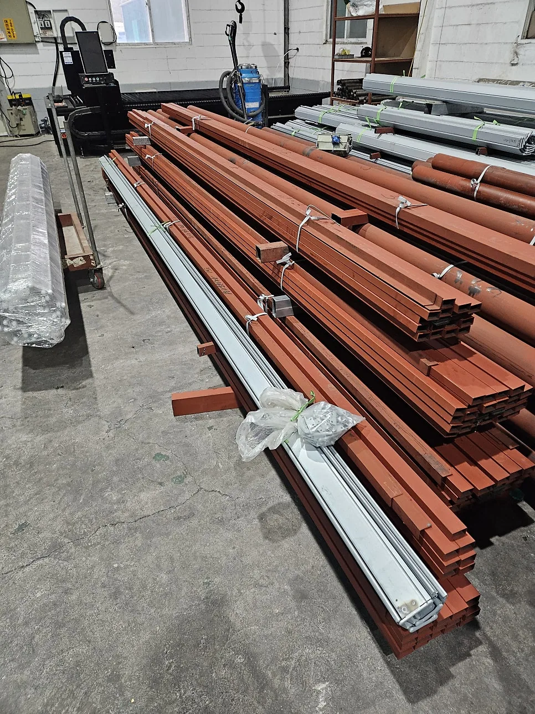

방화셔터 제조 · 1997년부터
인정받은 방화셔터를 공장에서 바로 만듭니다
경기도 광주 자체 공장에서 강판을 자르고 접어 슬랫까지 직접 만듭니다. KICT 품질인정 제품과 자재승인 · 준공서류까지 함께 챙깁니다.

KICT 품질인정 2종
- 철재 방화셔터SH-F01 · 60분
- 스크린 방화셔터SH-S01 · 60분
어떤 현장인가요?
제품 이름을 몰라도 괜찮습니다. 현장에 맞는 제품부터 안내합니다.
- 주차장 · 물류창고 차량과 지게차가 드나드는 곳. 충격에 강한 철재 슬랫 방화셔터. 철재 방화셔터 SH-F01
- 공장 · 넓은 출입구 폭 8m가 넘는 개구부, 90분 내화가 필요한 구획. 두 제품 모두 시험 통과 · 인정서 발급 대기입니다. 초대형 스크린 SH-TS01 · TS02철재 방화셔터 90분 SH-F02
- 사무실 · 주거 실내 구획 셔터박스가 작고 가벼운 실리카 직물 스크린. 천장 속 공간이 좁은 실내에 맞습니다. 스크린 방화셔터 SH-S01
- 상가 · 매장 전면 알루미늄 · 파이프 · 투시형 방범 셔터를 수동이나 전동으로. 단열 · 내풍압 셔터도 있습니다. 방범 셔터A/L 내풍압 · 단열
- 고장 · 수리 · 철거 움직이지 않는 셔터의 수리와 철거, 철거 뒤 새 셔터 재시공까지 직영 LS셔터가 직접 합니다. 직영 LS셔터 시공 · 수리
- 셔터 시공 · 수리업체 슬랫 몇 장, 부품 몇 개도 납품합니다. T바(하장)는 가이드레일 홈 깊이에 맞춰 만듭니다. 자재 · 부속
1997~
셔터 한 길
2006년 주식회사 성현 설립
8 × 4m
인정 제품 최대 개구부
철재 SH-F01 · 스크린 SH-S01
300여 현장
최근 3년 납품
물류·업무·주거·산업 시설
전국
납품 · 시공
출장 시공과 자재 납품
제품소개
공장에서 직접 만드는 방화셔터와 셔터 제품입니다. 방화셔터는 품질인정 상태를 함께 표시했습니다.
- 철재 방화셔터SH-F01 60분 · 8,000 × 4,000mm 인정서 보유
- 철재 방화셔터 90분SH-F02 90분 · 8,000 × 4,000mm 시험 통과 · 인정서 발급 대기
- 스크린 방화셔터SH-S01 60분 · 8,000 × 4,000mm 인정서 보유
- 초대형 스크린 방화셔터SH-TS01 · TS02 60분 / 90분 · 12,000 × 8,500mm 시험 통과 · 인정서 발급 대기
- A/L 내풍압 · 단열 셔터일반 이중 · 단열 · 내풍압 · 복합 4종 단열 · 내풍압
- 방범 셔터철재 · 알루미늄 · 파이프 · 웨이브 · 투시형 · 타공 상가 매장 · 창문 · 출입문 현장 맞춤 제작
- 셔터 자재 · 부속 납품슬랫 · 샤프트 · T바(하장) · 미미 · 절곡 부재 셔터 시공 · 수리업체 업체 납품
- 오버헤드 · 스태킹 · 스피드도어 · 제연커튼물류창고 · 공장 출입구용 도어와 제연커튼 물류창고 · 공장 출입구 기타 · 견적 문의
복합방화셔터(셔터 + 내화문 일체형)는 품질인정을 진행하고 있으며, 인정을 마치기 전까지 판매하지 않습니다. 자세히
KICT 품질인정 2종
㈜성현 명의로 받은 한국건설기술연구원 품질인정입니다.
| 인정 구분 | 제품 | 내화 | 인정번호 |
|---|---|---|---|
| 수직 비차열 방화셔터 (NVS) | 철재 방화셔터 SH-F01 | 60분 | FDS-NVS23-0925-3 |
| 기타 방화셔터 (OTS) | 스크린 방화셔터 SH-S01 | 60분 | FDS-OTS23-0925-4 |
세부인정내용은 견적을 문의하실 때 요청해 주세요.

- 1
현장 사진 찍기
셔터나 개구부 정면이 다 보이게 찍어 주세요. 위쪽 공간과 양옆 벽이 함께 나오면 더 좋습니다.
- 2
문자 · 카톡으로 보내기
현장 지역과 대략적인 가로 · 세로 크기를 같이 적어 주세요. 제품명은 몰라도 됩니다.
- 3
확인 후 연락
담당자가 사진을 보고 필요한 작업 범위와 제품을 안내합니다. 영업일 08:00~17:00.
자르고, 접고, 말아 올리는 일까지 모두 우리 공장 안에서
주식회사 성현은 1997년 셔터 일을 시작해 2006년 회사를 세웠습니다. 강판 절단과 절곡, 슬랫 성형을 외주 없이 경기도 광주 공장에서 직접 합니다.
- 01절단
강판을 현장 치수에 맞춰 자릅니다.
- 02절곡
가이드레일, 셔터박스, 각종 부재를 공장에서 직접 접습니다.
- 03슬랫 성형
슬랫을 만들어 개구부 폭에 맞게 길이를 맞춥니다.
- 04출하
인정 제품은 로트번호를 붙여 어느 현장에 들어갔는지 기록합니다.